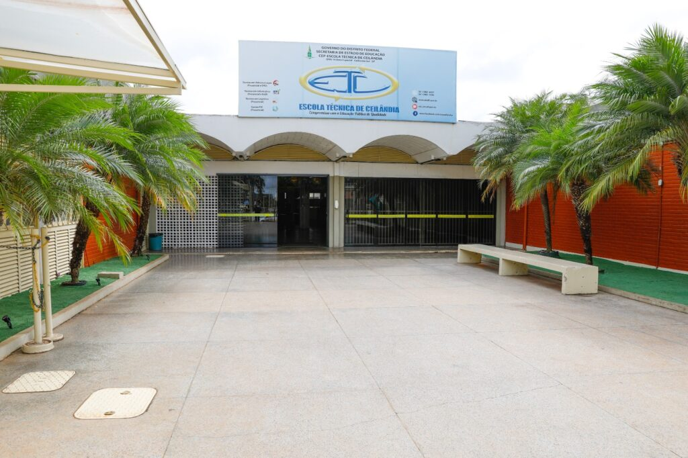

Historico
Escola Tecnica De Ceilandia

A Instituição foi inaugurada em 21 de maio de 1982 com o nome de CET (Centro de Educação para o Trabalho).
Em 17 de dezembro de 2000, com a inauguração de um novo prédio, teve a ampliação de sua área construída de
4.100m² para 8.166m².
Em 18 de julho de 2002, passou a ser um Centro de Educação Profissional (CEP) e começou também a oferecer Cursos
Técnicos.
Missão da Escola Técnica de Ceilândia
Contribuir para o desenvolvimento da população do Distrito Federal e Entorno, proporcionando Formação Profissional na dimensão da Humanização do Processo Produtivo,
visando a inserção cidadã no mercado de trabalho, ofertando cursos de Educação Profissional nos Níveis Básico e Técnico, globalizando aspectos pertinentes ao mundo do trabalho,
que flexibilizam os caminhos da inserção social através da produção de bens e serviços.
Atividades Voltadas ao atendimento à Comunidade
Funcionamento da Biblioteca Cora Coralina, cujo acervo possui mais de 15 mil livros atendendo à comunidade nos três turnos;
Venda de produtos e prestação de serviços à comunidade de Ceilândia e entorno principalmente nos cursos das áreas de: Vestuário, Beleza, Veículos e Móveis;
Utilização do espaço físico interno da escola para realização de eventos-socio-culturais como formaturas; palestras; seminários; etc.